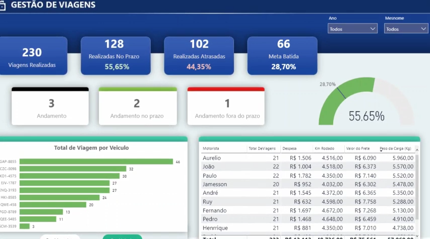

Artigos


A origem está nos primórdios da linguagem C pelo autor Brian Kernighan em 1972 enquanto trabalhava na Bell Labs...
Um dos cursos mais singulares já vistos sem dúvida, até pessoas de fora da universidade que nunca possuíram relação com a área se inscrevem no curso...
A Big Data tão conhecida nada mais é que a geração massiva de dados e compilados em um banco de dados. Contudo, é ingenuidade trata-lo como simples armazenamento...

De forma simplificada, muitas empresas lidam com fluxos de operações financeiras diárias, que envolve pagamentos, recebimentos e outras movimentações...
Software poderoso, possui fácil navegação nos dados e faz boas apresentações visuais, além de ser facilmente integrado com outros softwares. Trabalha com vários conjuntos e quantidades...
A manutenção, especialmente a preventiva, é essencial para o bom funcionamento dos veículos. Se for feita de forma adequada, há menos chances de haver necessidade de consertos.